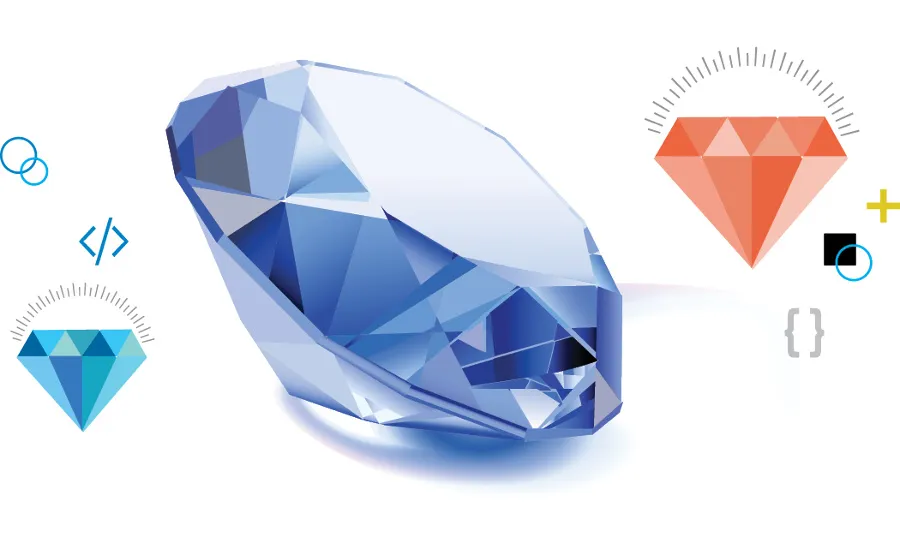

A Masters graduate from University of Illinois Chicago (UIC) with major in Business Analytics and a Bachelors in Computer Science from G.H. Raisoni College of Engineering, Nagpur affiliated to Nagpur University.
Motivated by a deep passion for merging business acumen with the capabilities of data science, I harness analytical insights to inform intelligent strategic decisions and ignite innovation. I have worked on several projects across various domains like Retail, Finance, Automobile, Healthcare where I was involved in solving a challenging problems using Machine Learning, visualization and statistical analysis to aide informed strategic decisions and drive innovation.
The objective of this project is to develop autoencoders to detect frauds in financial datasets.
The objective is to predict potential loans that can default. Performed data cleaning, exploration & predictive analysis using machine learning models in R.
Analyze a business problem for a company that manufactures and sells high-end home goods to predict how much money company can expect to earn from sending out a catalog to new customers. This task will involve building the model and applying the results in order to provide a recommendation.

A jewellery company wants to put in a bid to purchase a large set of diamonds. Developed a regression predictive models to make a recommendation on how much the jewellery company should bid for the diamonds.

A Conversational AI Chatbot powered by LangChain, OpenAI GPT Models, and Streamlit. Prompt engineering involves designing and constructing specific, structured prompts or instructions for language models to guide their outputs towards desired responses or tasks.